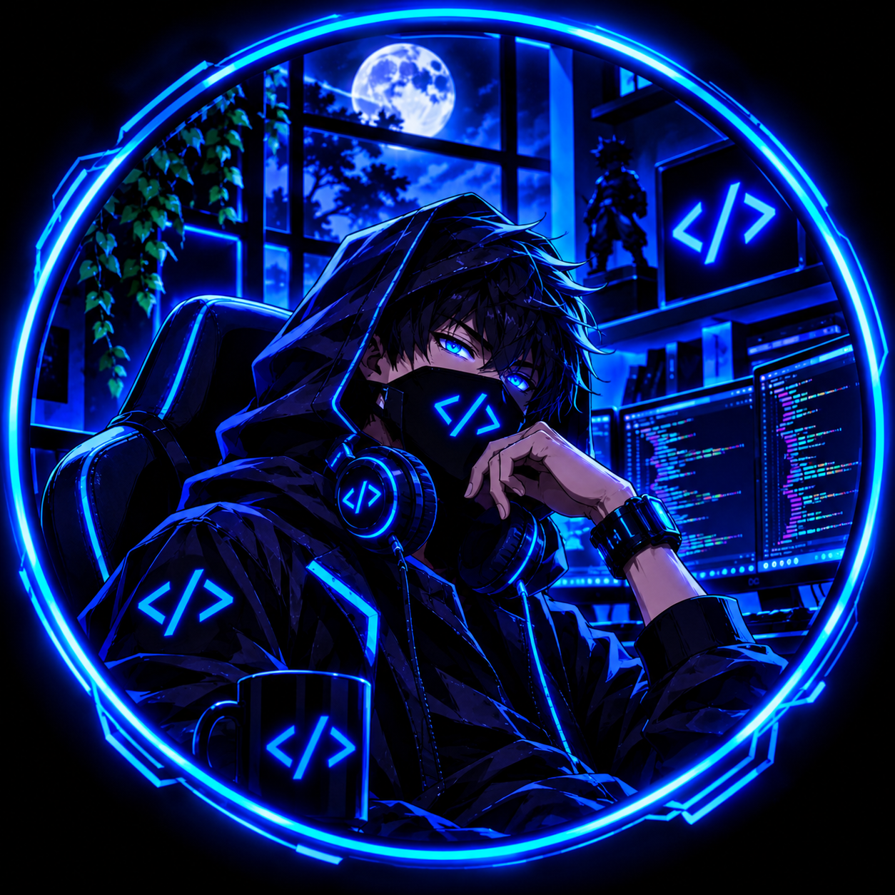
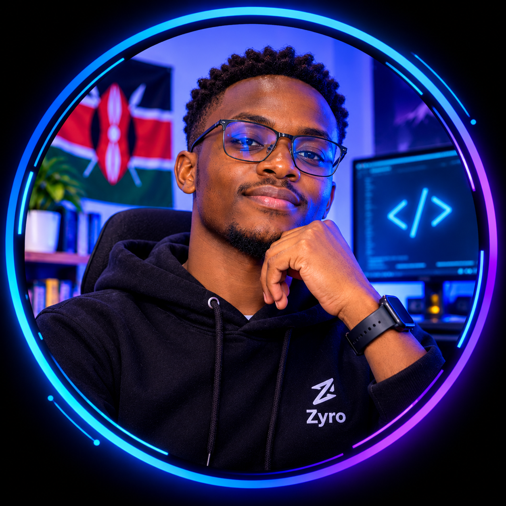

◈
Frontend Development
Building interfaces and interactive web experiences.
HELLO, WORLD. I'M
I build digital experiences, explore new technologies and turn ideas into functional solutions. My journey is just beginning, and the possibilities are limitless.


01 / THE PERSON BEHIND THE CODE
I'm KAMVYR, an upcoming software developer passionate about building useful things with technology.
I'm at the beginning of my professional development journey, but I've already been exploring both frontend and backend development. I enjoy understanding how websites work, how systems communicate and how an idea becomes a working product.
I believe growth comes from building, experimenting, making mistakes and learning continuously. I'm not claiming to know everything — I'm committed to getting better every day.
</> BUILD BEYOND THE UNKNOWN.
Frontend & Backend
Always learning
Build meaningful digital experiences.
02 / MY TECHNOLOGY UNIVERSE
Technologies I've been working with and areas I'm exploring.
Building interfaces and interactive web experiences.
Working with server-side logic and application frameworks.
Tracking code changes and working with repositories.
Working with command-line tools and container technology.
Putting web projects online and making them accessible.
Exploring database options and learning data management.
My skills reflect my current learning and experience. I'm continuously developing them through practice and projects.
03 / WHAT I'M BUILDING
A space for experiments, ideas and projects as my journey grows.
WORK IN PROGRESS
I'm developing my experience through hands-on practice. New projects and experiments will appear here as they take shape.
Connect with me ↗04 / THE PROCESS
Not a finished destination — a continuous process of growth.
Building foundations with HTML, CSS, JavaScript, Tailwind CSS and Vite.js.
Learning Python, Node.js, Django and Flask to understand the systems behind web applications.
Developing practical familiarity with Git, GitHub, Linux commands, Docker and Vercel.
Exploring databases, building more complete applications and strengthening my development skills.
05 / START A CONNECTION
I'm always interested in learning, collaborating and connecting with people who love building things with technology.
Send me an email ↗